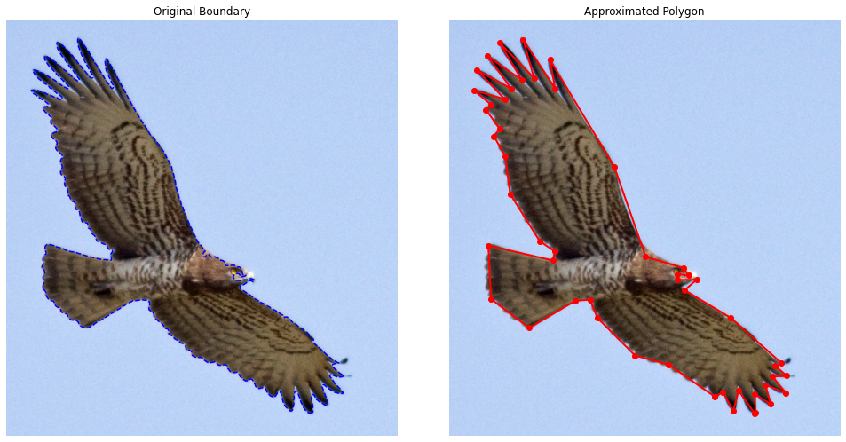
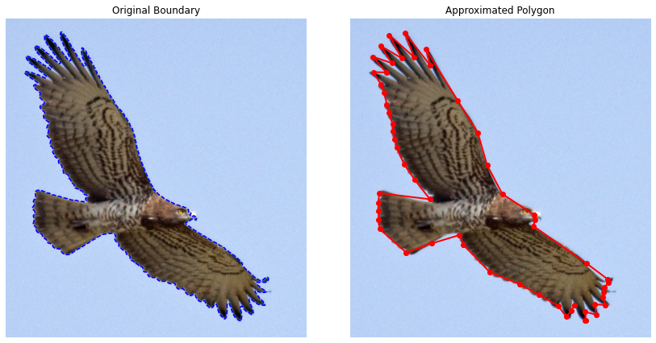
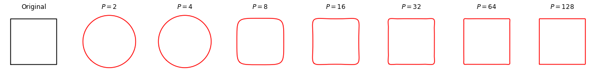
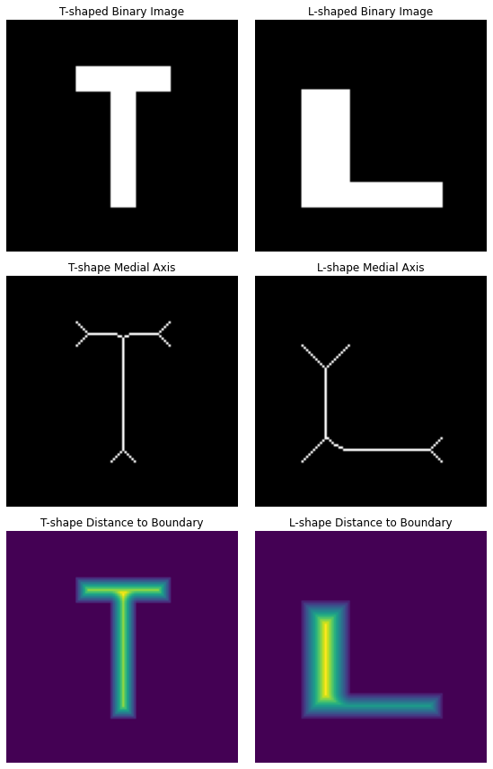
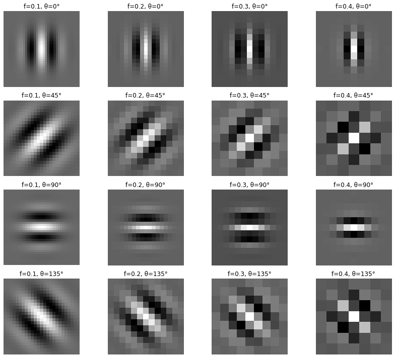
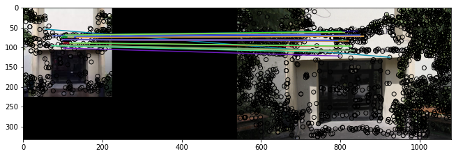
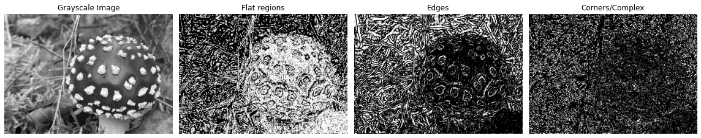

Chapter 12: Image Representation by Feature Extraction#
This is the companion file for Chapter 12.
Programming exercise 12.1:#
Run the following code to perform polygon approximation by splitting.
# Polygon approximation by splitting
import numpy as np
import matplotlib.pyplot as plt
from skimage import color, filters, measure, morphology, io
def perpendicular_distance(point, line_start, line_end):
if np.all(line_start == line_end):
return np.linalg.norm(point - line_start)
line = line_end - line_start
t = np.dot(point - line_start, line) / np.dot(line, line)
t = np.clip(t, 0, 1)
projection = line_start + t * line
return np.linalg.norm(point - projection)
def split_polygon(points, start_idx, end_idx, threshold, result):
start_point = points[start_idx]
end_point = points[end_idx]
max_distance = -1
index_of_max = -1
for i in range(start_idx + 1, end_idx):
dist = perpendicular_distance(points[i], start_point, end_point)
if dist > max_distance:
max_distance = dist
index_of_max = i
if max_distance > threshold:
split_polygon(points, start_idx, index_of_max, threshold, result)
split_polygon(points, index_of_max, end_idx, threshold, result)
else:
result.append(end_idx)
def polygon_approximation_with_splitting(boundary_points, threshold):
result = [0]
split_polygon(boundary_points, 0, len(boundary_points) - 1, threshold, result)
return boundary_points[result]
image_rgb = io.imread("images/20.jpg")
image_rgb = image_rgb[500:1350, 600:1400]
# Convert to grayscale
gray = color.rgb2gray(image_rgb)
# Apply thresholding (Otsu)
thresh = filters.threshold_otsu(gray)
binary = gray < thresh # Invert if needed depending on your object
# Clean mask
binary = morphology.remove_small_objects(binary, min_size=500)
binary = morphology.binary_closing(binary, morphology.disk(3))
binary = morphology.remove_small_holes(binary, area_threshold=1000)
# Find contours
contours = measure.find_contours(binary, 0.5)
contour = max(contours, key=len) # largest one
# Downsample for speed
contour = contour[::5]
# Polygon approximation
threshold = 10.0
approx_polygon = polygon_approximation_with_splitting(contour, threshold)
# Plot original and approximated contours separately
fig, axes = plt.subplots(1, 2, figsize=(14, 7))
# Original Boundary Visualization
plt.subplot(1, 2, 1)
plt.imshow(image_rgb)
plt.plot(contour[:, 1], contour[:, 0], linestyle='--', color='blue', linewidth=1.5)
plt.title("Original Boundary")
plt.axis('off')
# Approximated Polygon Visualization
plt.subplot(1, 2, 2)
plt.imshow(image_rgb)
plt.plot([p[1] for p in approx_polygon], [p[0] for p in approx_polygon], 'ro-', linewidth=2)
plt.title("Approximated Polygon")
plt.axis('off')
plt.tight_layout()
plt.show()

Programming exercise 12.2:#
Run the following code to perform polygon approximation by merging.
import numpy as np
import matplotlib.pyplot as plt
from skimage import measure, morphology, io
from sklearn.linear_model import LinearRegression
def least_squares_error(P):
""" Compute Least Squares Error for the set of points P fitting a line. """
# Prepare points (x, y)
X = np.array([p[1] for p in P]).reshape(-1, 1)
Y = np.array([p[0] for p in P])
# Fit linear regression (a line) to the points
model = LinearRegression()
model.fit(X, Y)
# The parameters of the line
a = model.coef_[0]
b = model.intercept_
# Predict the y values using the line
Y_pred = model.predict(X)
# Calculate the Least Squares Error (sum of squared errors)
L = np.sum((Y - Y_pred) ** 2)
return a, b, L
def polygon_approximation_by_merging(boundary_points, threshold):
P = [boundary_points[0]] # Start with the first point
vertices = [] # Store the vertices
for i in range(1, len(boundary_points)):
P.append(boundary_points[i])
a, b, L = least_squares_error(P)
# If the error is above threshold, add the last point as a vertex
if L >= threshold:
vertices.append(P[-2]) # Last pixel before the break
P = [boundary_points[i]] # Start new subset
# Add the last point to the vertices
vertices.append(P[-1])
return vertices
# === MAIN PIPELINE ===
# Load the horse image
image_rgb = io.imread("images/20.jpg") # Replace with your local image path if needed
image_rgb = image_rgb[500:1350, 600:1400]
# Convert to grayscale
gray = image_rgb.mean(axis=2) # Simple grayscale conversion
# Apply thresholding (Otsu or simple thresholding)
thresh = gray.mean() # Simple thresholding; you could use filters.threshold_otsu()
binary = gray < thresh # Invert if needed depending on your object
# Clean mask (optional)
binary = morphology.remove_small_objects(binary, min_size=500)
binary = morphology.binary_closing(binary, morphology.disk(3))
binary = morphology.remove_small_holes(binary, area_threshold=1000)
# Find contours
contours = measure.find_contours(binary, 0.5)
contour = max(contours, key=len) # largest contour
# Polygon approximation
threshold = 1000.0 # Adjust this threshold to control the "tightness" of the polygon
approx_polygon = polygon_approximation_by_merging(contour, threshold)
# Plot the original contour and the approximated polygon separately
plt.figure(figsize=(12, 6))
# Original Boundary Visualization
plt.subplot(1, 2, 1)
plt.imshow(image_rgb)
plt.plot(contour[:, 1], contour[:, 0], linestyle='--', color='blue', linewidth=1.5)
plt.title("Original Boundary")
plt.axis('off')
# Approximated Polygon Visualization
plt.subplot(1, 2, 2)
plt.imshow(image_rgb)
plt.plot([p[1] for p in approx_polygon], [p[0] for p in approx_polygon], 'ro-', linewidth=2)
plt.title("Approximated Polygon")
plt.axis('off')
plt.tight_layout()
plt.show()

Programming exercise 12.3:#
Run the following code to see reconstruction from Fourier descriptors.
import cv2
import numpy as np
import matplotlib.pyplot as plt
def create_square_image(size=256):
img = np.zeros((size, size), dtype=np.uint8)
cv2.rectangle(img, (64, 64), (192, 192), 255, -1)
return img
def get_contour_points(binary_img):
contours, _ = cv2.findContours(binary_img, cv2.RETR_EXTERNAL, cv2.CHAIN_APPROX_NONE)
contour = max(contours, key=cv2.contourArea)
contour = contour[:, 0, :]
complex_contour = contour[:, 0] + 1j * contour[:, 1]
return complex_contour
def resample_contour(contour, num_points=128):
"""Resample a closed contour to a fixed number of points using interpolation."""
# Ensure it's a closed loop
contour = np.append(contour, [contour[0]], axis=0)
# Calculate cumulative arc length (distance along the contour)
diff = np.diff(contour)
dists = np.abs(diff)
cumulative = np.concatenate(([0], np.cumsum(dists)))
total_length = cumulative[-1]
# Create evenly spaced target arc lengths
desired = np.linspace(0, total_length, num_points, endpoint=False)
# Interpolate real and imaginary parts separately
real_interp = np.interp(desired, cumulative, contour.real)
imag_interp = np.interp(desired, cumulative, contour.imag)
return real_interp + 1j * imag_interp
def reconstruct_contour_sym(fd, P):
N = len(fd)
fd_shifted = np.fft.fftshift(fd)
fd_filtered = np.zeros(N, dtype=complex)
center = N // 2
half_P = P // 2
fd_filtered[center - half_P : center + half_P + P % 2] = fd_shifted[center - half_P : center + half_P + P % 2]
fd_filtered = np.fft.ifftshift(fd_filtered)
contour_rec = np.fft.ifft(fd_filtered)
return np.real(contour_rec), np.imag(contour_rec)
def plot_reconstructions(original, reconstructions, Ps):
fig, axs = plt.subplots(1, len(Ps)+1, figsize=(2 * (len(Ps)+1), 2)) # Smaller, square-friendly layout
# Compute axis limits (shared for all plots)
all_points = [original] + [x + 1j*y for x, y in reconstructions]
all_real = np.concatenate([np.real(pts) for pts in all_points])
all_imag = np.concatenate([np.imag(pts) for pts in all_points])
xmin, xmax = all_real.min(), all_real.max()
ymin, ymax = all_imag.min(), all_imag.max()
margin = 10 # Add some padding
xlim = (xmin - margin, xmax + margin)
ylim = (ymin - margin, ymax + margin)
# Original shape
axs[0].plot(np.real(original), np.imag(original), 'k')
axs[0].set_title("Original", fontsize=12)
axs[0].set_xlim(xlim)
axs[0].set_ylim(ylim)
axs[0].set_aspect('equal')
axs[0].axis('off')
# Reconstructions
for ax, (x, y), p in zip(axs[1:], reconstructions, Ps):
ax.plot(x, y, 'r')
ax.set_title(f"$P = {p}$", fontsize=12)
ax.set_xlim(xlim)
ax.set_ylim(ylim)
ax.set_aspect('equal')
ax.axis('off')
plt.tight_layout()
plt.show()
# Main
img = create_square_image()
contour = get_contour_points(img)
contour_centered = contour - np.mean(contour)
contour = resample_contour(contour, num_points=128)
fd = np.fft.fft(contour_centered)
# Reconstruct using increasing number of descriptors
Ps = [2, 4, 8, 16, 32, 64, 128]
reconstructions = [reconstruct_contour_sym(fd, P) for P in Ps]
plot_reconstructions(contour_centered, reconstructions, Ps)

Programming exercise 12.4:#
Run the following code to perform medial axis transform on sample T-shaped and L-shaped objects.
import numpy as np
import matplotlib.pyplot as plt
from skimage.morphology import medial_axis
from skimage.draw import rectangle
def create_T_shape_image(shape=(100, 100)):
img = np.zeros(shape, dtype=bool)
rr, cc = rectangle(start=(20, 45), end=(80, 55))
img[rr, cc] = True
rr, cc = rectangle(start=(20, 30), end=(30, 70))
img[rr, cc] = True
return img
def create_L_shape_image(shape=(100, 100)):
img = np.zeros(shape, dtype=bool)
rr1, cc1 = rectangle(start=(30, 20), end=(80, 40))
img[rr1, cc1] = True
rr2, cc2 = rectangle(start=(70, 40), end=(80, 80))
img[rr2, cc2] = True
return img
def compute_medial_axis(binary_image):
skeleton, distance = medial_axis(binary_image, return_distance=True)
return skeleton, distance
def plot_3x2(T_img, L_img, T_skel, T_dist, L_skel, L_dist):
fig, axs = plt.subplots(3, 2, figsize=(8, 12))
# Row 0: T-shape Original and L-shape Original
axs[0, 0].imshow(T_img, cmap='gray')
axs[0, 0].set_title("T-shaped Binary Image")
axs[0, 0].axis('off')
axs[0, 1].imshow(L_img, cmap='gray')
axs[0, 1].set_title("L-shaped Binary Image")
axs[0, 1].axis('off')
# Row 1: T-shape Medial Axis and L-shape Medial Axis
axs[1, 0].imshow(T_skel, cmap='gray')
axs[1, 0].set_title("T-shape Medial Axis")
axs[1, 0].axis('off')
axs[1, 1].imshow(L_skel, cmap='gray')
axs[1, 1].set_title("L-shape Medial Axis")
axs[1, 1].axis('off')
# Row 2: T-shape Distance and L-shape Distance
axs[2, 0].imshow(T_dist, cmap='viridis')
axs[2, 0].set_title("T-shape Distance to Boundary")
axs[2, 0].axis('off')
axs[2, 1].imshow(L_dist, cmap='viridis')
axs[2, 1].set_title("L-shape Distance to Boundary")
axs[2, 1].axis('off')
plt.tight_layout()
plt.show()
# Run
T_img = create_T_shape_image()
L_img = create_L_shape_image()
T_skel, T_dist = compute_medial_axis(T_img)
L_skel, L_dist = compute_medial_axis(L_img)
plot_3x2(T_img, L_img, T_skel, T_dist, L_skel, L_dist)

Programming exercise 12.5:#
Run the following code to see Gabor filters.
#Gabor Filters
import numpy as np
import matplotlib.pyplot as plt
from skimage.filters import gabor_kernel
# Define Gabor kernel bank
frequencies = [0.1, 0.2, 0.3, 0.4] # Spatial frequencies
thetas = [0, np.pi/4, np.pi/2, 3*np.pi/4] # Orientations
# Create kernels
kernels = []
for theta in thetas:
for freq in frequencies:
kernel = gabor_kernel(frequency=freq, theta=theta)
kernels.append((kernel, freq, theta))
# Plot real parts of the kernels
fig, axes = plt.subplots(len(thetas), len(frequencies), figsize=(12, 10))
for ax, (kernel, freq, theta) in zip(axes.ravel(), kernels):
ax.imshow(np.real(kernel), cmap='gray')
ax.set_title(f'f={freq:.1f}, θ={theta * 180 / np.pi:.0f}°')
ax.axis('off')
plt.tight_layout()
plt.show()

Programming exercise 12.6:#
Run the following code to perform SIFT keypoint extraction and matching.
from skimage import data, io
from skimage.color import rgb2gray, rgba2rgb
from skimage.feature import match_descriptors, plot_matches, SIFT
from skimage.transform import resize
import matplotlib.pyplot as plt
# Read images and ensure RGB (not RGBA)
image1 = io.imread('images/bmb1.jpeg')
if image1.shape[-1] == 4:
image1 = rgba2rgb(image1)
image1_gray = rgb2gray(image1)
image2 = io.imread('images/bmb2.jpeg')
if image2.shape[-1] == 4:
image2 = rgba2rgb(image2)
image2_gray = rgb2gray(image2)
fig, axes = plt.subplots(nrows=1, ncols=2, figsize=(11,8))
ax = axes.ravel()
ax[0].imshow(image1)
ax[0].axis('off')
ax[1].imshow(image2)
ax[1].axis('off')
# Extract SIFT descriptors
descriptor_extractor = SIFT()
descriptor_extractor.detect_and_extract(image1_gray)
keypoints1 = descriptor_extractor.keypoints
descriptors1 = descriptor_extractor.descriptors
descriptor_extractor.detect_and_extract(image2_gray)
keypoints2 = descriptor_extractor.keypoints
descriptors2 = descriptor_extractor.descriptors
# Find matching descriptors in two images
matches = match_descriptors(descriptors1, descriptors2, max_ratio=0.7,
cross_check=True)
# Plot images and matching descriptors
fig, ax = plt.subplots(nrows=1, ncols=1, figsize=(11, 8))
plot_matches(ax, image1, image2, keypoints1, keypoints2, matches)
#plt.tight_layout()
plt.show()

Programming exercise 12.7:#
Run the following code to extract local binary patterns.
import numpy as np
from skimage import io
from skimage.color import rgb2gray, rgba2rgb
from skimage.feature import local_binary_pattern
import matplotlib.pyplot as plt
# Parameters
radius = 3
n_points = 8 * radius
method = 'uniform'
# Load and preprocess image
image = io.imread('images/redmushroom_long.png')
if image.ndim == 3 and image.shape[-1] == 4:
image = rgba2rgb(image)
gray_image = rgb2gray(image)
# Compute LBP
lbp = local_binary_pattern(gray_image, P=n_points, R=radius, method=method)
# Define labels using your heuristic
titles = ('edge', 'flat', 'corner')
w = radius - 1
edge_labels = list(range(n_points // 2 - w, n_points // 2 + w + 1))
flat_labels = list(range(0, w + 1)) + list(range(n_points - w, n_points + 2))
i_14 = n_points // 4
i_34 = 3 * (n_points // 4)
corner_labels = list(range(i_14 - w, i_14 + w + 1)) + list(range(i_34 - w, i_34 + w + 1))
# Create masks
flat_mask = np.isin(lbp, flat_labels)
edge_mask = np.isin(lbp, edge_labels)
corner_mask = np.isin(lbp, corner_labels)
# Plot results
fig, axs = plt.subplots(1, 4, figsize=(16, 5))
axs[0].imshow(gray_image, cmap='gray')
axs[0].set_title('Grayscale Image')
axs[0].axis('off')
axs[1].imshow(flat_mask, cmap='gray')
axs[1].set_title('Flat regions')
axs[1].axis('off')
axs[2].imshow(edge_mask, cmap='gray')
axs[2].set_title('Edges')
axs[2].axis('off')
axs[3].imshow(corner_mask, cmap='gray')
axs[3].set_title('Corners/Complex')
axs[3].axis('off')
plt.tight_layout()
plt.show()
